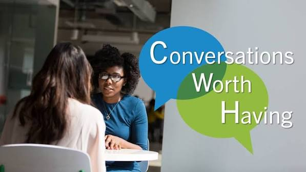

Education
Making conversations about mental health, emotions, trauma and personal growth easier to understand.
Mental well-being. Human dignity. Resilience.
We believe everyone deserves to be heard, valued and supported. We work to encourage meaningful conversations about mental health, emotional well-being and the challenges people face.
Every person matters. Every story deserves dignity.

Who we are
Aisha Foundation is committed to promoting mental health awareness, emotional well-being, human dignity and social responsibility. We seek to challenge stigma and help communities approach difficult experiences with empathy, understanding and respect.
More about the foundationWhat guides us
Education, advocacy and support shape our approach to community well-being.
Making conversations about mental health, emotions, trauma and personal growth easier to understand.
Challenging harmful stigma and encouraging communities to treat people with dignity and compassion.
Promoting safe, inclusive conversations and awareness of appropriate support and professional resources.
Our focus
Encouraging open conversations about stress, emotions, mental health and everyday psychological challenges.
Helping people understand difficult experiences while respecting personal boundaries, dignity and privacy.
Promoting self-awareness, confidence, healthy coping and the ability to navigate life's challenges.

Mind mattersA conversation worth having
A proposed television talk show concept focused on trauma, psychology, mental health, personal growth and resilience. It aims to make important conversations accessible and encourage informed, compassionate understanding.
Discover the conceptThis is a proposed programme concept; broadcast details will be shared when officially confirmed.
A more compassionate community
Learn about our mission and discover how you can connect with the foundation.
Connect with us